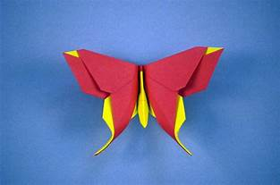
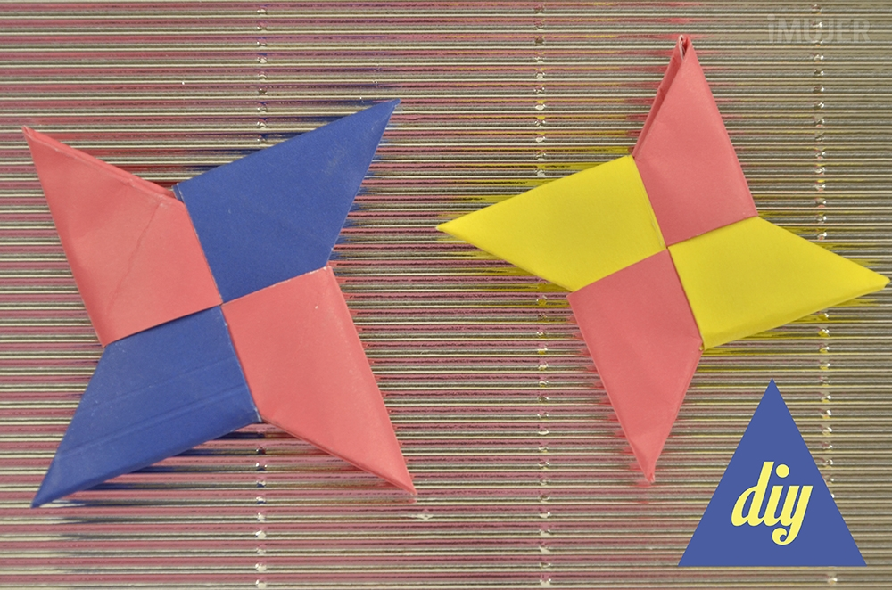

Diseños de Origami
Acerca de nosotros
Síguenos

Datos interesantes sobre la mariposa
- Las mariposas son insectos voladores de varias formas y colores
- las mariposas se alimentan del nectar de las flores

Datis interesantes sobre las estrellas ninja
- Las estrellas ninja tambien reciben el nombre de shuriken
- son armas blancas arrojadisas que fueron usadas por los ninjas en la antigua japon y china
- las armas arrojadisas que tienen un uso similar a las estrellas ninjas son los kunais o cuchillos arrojadisos